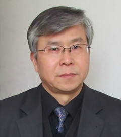
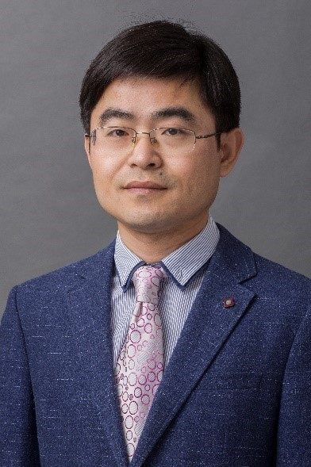
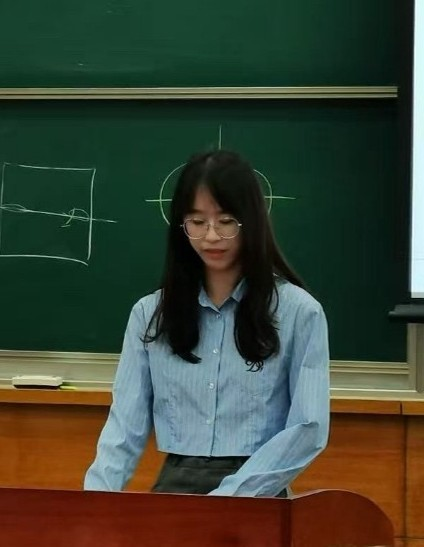
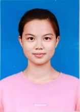

SHANGHAI JIAO TONG UNIVERSITY
走进机器人焊接 智能化团队
上海交通大学机器人焊接智能化技术实验室
01 —
团队概况
研究领域
实验室由陈善本教授于2000年3月领衔创建，围绕机器人焊接智能化，持续开展视觉与声音感知、焊接过程建模和智能控制研究；近年来进一步聚焦复杂工件三维感知、多层多道路径规划与焊接质量监测。
实验场景 ← 左右滑动查看 →
科研成果
陈善本教授作为总体技术负责人、第二完成人参与的“机器人焊接空间焊缝质量智能控制技术及其系统研究”获2004年国家科学技术进步奖二等奖；其主持的“智能化机器人焊接关键技术及其应用研究”获中国机械工业科学技术一等奖。陈善本教授指导的付裕等关于焊枪位姿监测的论文获2025年度 A. F. Davis 奖。
02 —
代表性论文与知识产权
代表性论文
← 左右滑动查看论文成果 →
代表性专利与软件著作权
证书首页 ← 左右滑动查看 →
03 —
团队师资
实验室以陈善本教授为创始人和主任，教师、博士后及研究生围绕智能焊接研究协作。
教师
 | 陈善本长江学者特聘教授 · 实验室创始人、主任研究视觉与多信息感知、焊接动态过程建模及智能控制。作为总体技术负责人、第二完成人参与的空间焊缝质量智能控制成果获国家科技进步二等奖。 |
| 陈华斌教授 · 博士生导师研究复杂场景机器人焊接、多模态过程感知与质量监测；作为通讯作者发表点云驱动弧焊轨迹生成及马鞍形焊缝多层多道规划研究。 |
| 许燕玲副教授 · 博士生导师研究机器视觉焊缝跟踪、多信息融合质量监测和数字孪生自动编程；参与提出 LSFP-Tracker 激光条纹特征提取方法，入选校 SMC—晨星青年学者奖励计划（B类）。 |
| 徐济进副教授 · 博士生导师面向焊接结构制造，开展焊接力学、数值模拟与高温合金增材制造研究；参与焊接相关国家和行业标准制定，推进模型方法与工程应用结合。 |
 | 余春副研究员 · 博士生导师研究金属增材制造、微电子互连与焊接界面可靠性，关注成形工艺和材料服役表现；相关成果曾获上海市科技进步一等奖。 |
博士后
| 赵一阳方向：爬壁焊接机器人、运动控制与焊接成形质量监测。成果：主持国家自然科学基金青年科学基金等3项课题，发表SCI论文20余篇。 |
| 万应才方向：双目视觉与三维重建、具身智能及自主移动焊接；研究大型钢结构场景下的大模型增强焊缝定位与车臂协同控制。成果：在 Measurement、IEEE RA-L、ICRA 等期刊与会议发表论文20余篇，参与国家重点研发计划及重大专项相关研究。 |
在读研究生
博士生
| 刘开 | 朱明 | 沈洁豪 |
 田子玉 |
钟斌 |
硕士生
| 韩宇 | 高笳皓 | 李心怡 |
| 王云鹏 | 杨紫东 |  钟凉秋 |